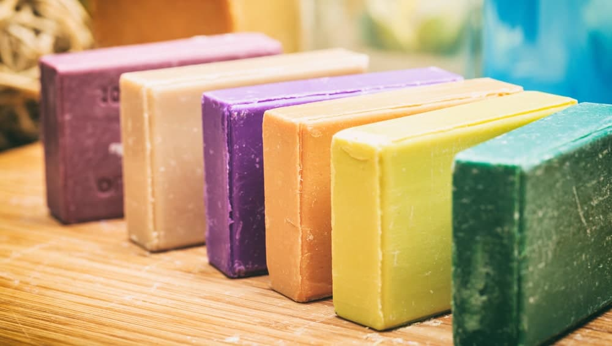
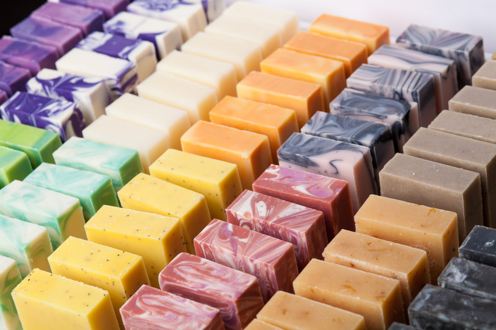

The evidence of the world has of a soap-like substance dates back to around 2800 BC. The first known creators of this substance were the Babylonians, Mesopotamians, Egyptians, Greeks and Romans. It wasn't originally made for bathing but for cleaning cooking utensils and medicinal purposes.
All soaps are made from fat, oils and salts. The Babylonians made their soap by boiling fat with ashes. Today, you still use some type of fat or oil in the soap making process. One of the most common ways to make soap is by combining a fat (either animal or plant) with lye in a process called the cold process method.
 